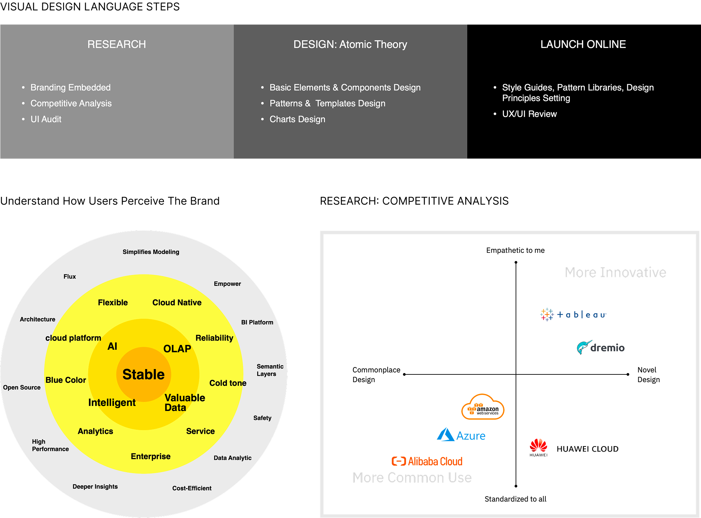
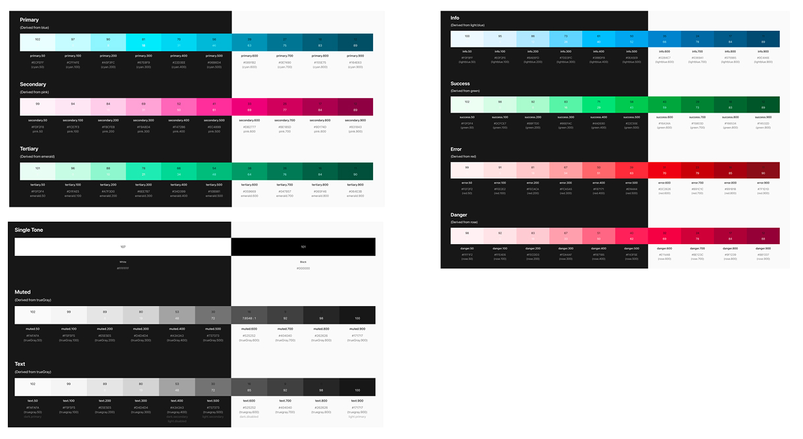
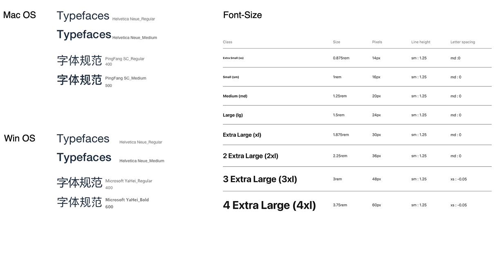
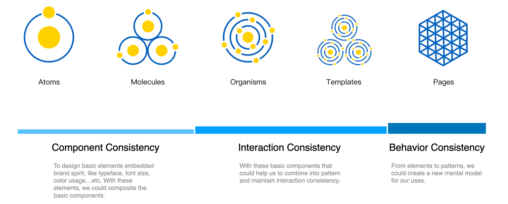
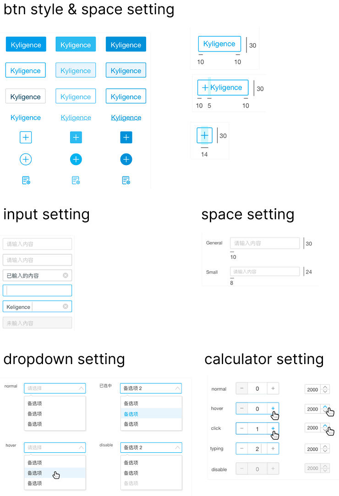
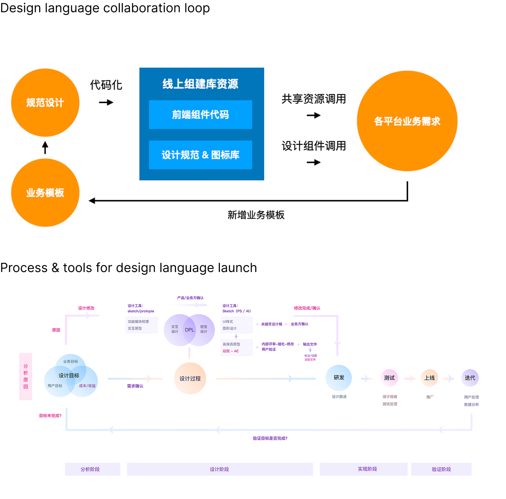

Scalable Component Library & Design Guideline
Establishing a unified design language from 0 to 1, empowering product teams to build consistent, accessible, and high-quality enterprise solutions.
My Role
Design System Lead, UI/UX Architect, Frontend Engineering Liaison
Project Scope
Component Library (Figma/Code), Visual Identity, Design Token Strategy, Documentation Site

Faced with growing product lines and inconsistent user experiences, we built a comprehensive design system. This initiative aimed to bridge the gap between design and engineering, ensuring visual consistency and accelerating development velocity across the enterprise PaaS/SaaS ecosystem.
From Chaos to Cohesion
We transformed a fragmented product landscape into a unified ecosystem by quantifying the design debt and establishing clear token-based standards.
| Dimension | Before (Chaos) | After (Cohesion) |
|---|---|---|
| Visual Consistency | Multiple, inconsistent UI libraries and style deviations. | Single source of truth via Design Tokens (Color, Typography, Spacing). |
| Development Speed | Reinventing components for every new feature; high engineering overhead. | Drag-and-drop pre-built, tested components; significant velocity boost. |
| Design-Dev Handoff | Fragmented communication; static redlines; interpretation errors. | Shared component library (Figma to Code); automated token sync. |
Design Foundations
The core values of the system were defined through fundamental visual elements, ensuring accessibility and clarity were built-in from the ground up.

Defined primary, secondary, and semantic colors with clear accessibility guidelines (WCAG compliance).

Established a scalable typographic scale for hierarchies, optimizing readability across devices.
Atomic Component Library
Following Atomic Design principles, we built a library of modular, reusable components from basic Atoms to complex Organisms.

- Atoms: Buttons, Inputs, Icons, Tooltips (Pure, stateful components).
- Molecules: Search bars, Form fields, Card headers (Combinations of atoms).
- Organisms: Navbars, Data tables, Complex forms (Distinct sections of an interface).
Governance & Figma Workflow
We established a contribution and maintenance model to ensure the system remains alive and relevant to product needs.


The library is mirrored between Figma and Code (React/Web Components), ensuring that design intents are perfectly translated into engineering implementation.
Full Design Language Study
Download the detailed PDF version for more understanding of design process.